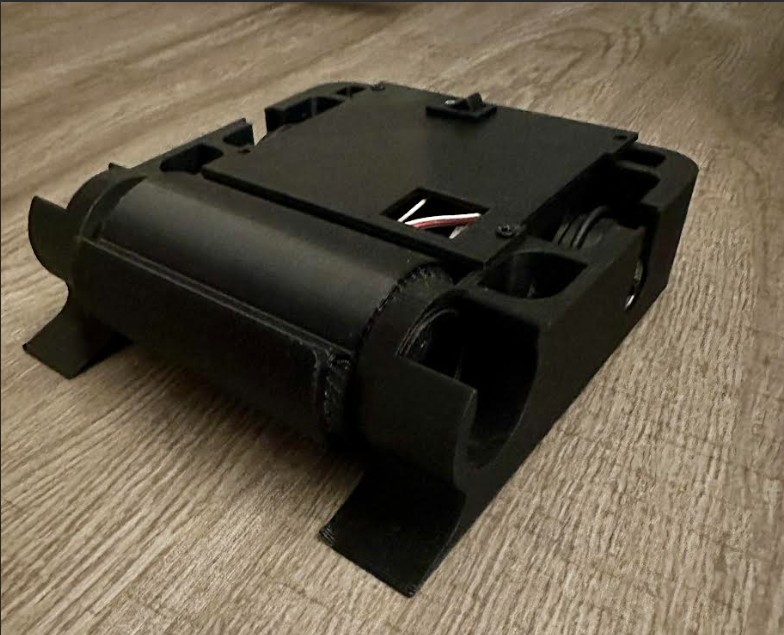

← All projects
1-lb Battle Bot
MechanicalDesigned and built a one-pound plastic battle bot to compete in events organized by the UMass Robotics Club.
The bot was designed around a simple, robust chassis with a focus on reliability and damage resistance. All components — frame, weapon, and electronics — were selected and integrated to fit within the strict one-pound weight limit.
A fun introduction to competitive robotics, combining rapid prototyping, mechanical design, and RC control system integration.